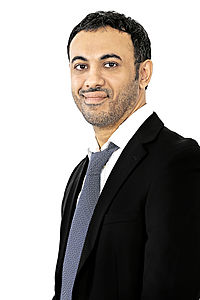

Qais Al Khonji is an Omani businessman and entrepreneur. He is
the founder of Qais United Enterprises Trading and Genesis International.He
serves as a board member for many Omani companies and is known for assisting
Omani citizens with overcoming the hurdles of starting small businesses in the
country.
He is also the co-owner and CEO of Genesis International, a medical education
company based in Oman.
He was born in Muscat, Oman. Al Khonji is married with two kids: Ziena and
Mahmoud.
Qais Al-Khonji graduated from Atlantic College in Wales in 1998, obtaining his
International Baccalaureate Diploma. Following his graduation, he moved to
Leicester, England that same year and finished his bachelor's degree in business
information systems in De Montfort University.
In 2010, Qais decided to begin his own business, Qais United, which was a simple
trading company that bought goods from China and sold them to individuals.
In the year 2012, Qais established his second company (Genesis International),
which is currently providing IT solutions, in addition to trying to implement
the so-called (Smart City), which should facilitate electronic payment of bills
for water and electricity within a certain population range. The company is now
seeking to try to apply this system in the Omani capital Muscat and some parts
of India.
In 2013, Qais established a successful enhanced oil recovery business called
Genesis Projects and Investments LLC - EOR Lab Services and he is currently
running it.
Also, Al-Khonji is a board member of Oman Fisheries since 2006, a board member
of Oman National Engineering & Investment CO. since 2009, a board member of
Sharakah which specifically encourages and supports the development of
entrepreneurs and SMEs in the Oman since 2011. Qais is also a board member of
Muscat National Holding since 2013.
He has also been recognized by his government as a representative of the country
and was appointed as a member of the Entrepreneurs' Organization to meet with
former Indian President Dr. A.P.J. Abdul Kalam to discuss Indian-Omani business
relations.
In 2015, he was chosen as Business Worldwide Magazine's 'Social Entrepreneur of
the Year' for Oman.